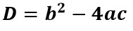
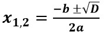
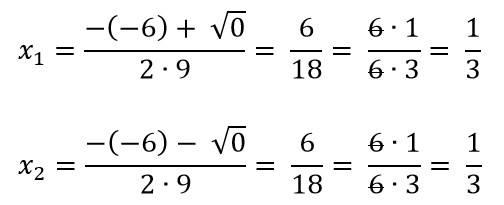
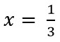
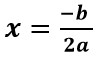

Квадратні рівняння
Означення
Рівняння, яке виглядає так: ax2 + bx + c = 0 , називається квадратним.
Тут a, b і c – це числа.
- a – це множник, на який множиться x2;
- b – це множник, на який множиться x;
- c – це деяке окреме число.
Приклади
- 9x2 - 6x + 1 = 0 – квадратне рівняння.
- 9x2 + 1 - 6x = 0 – також квадратне рівняння, тільки +1 і - 6x поміняли місцями (тут рівняння має вигляд ax2 + c + bx = 0).
- 9x2 + 1 = 6x – також квадратне рівняння, просто -6x перенесли праворуч від "=" і при цьому поміняли знак.
Розв’язок квадратних рівнянь (3 кроки)
Умова. Розв'яжить рівняння: 9x2 - 6x + 1 = 0.
(якщо потрібно) Приводимо квадратне рівняння до вигляду
ax2 + bx + c = 0.
- Визначаємо коефіцієнти a, b і c:
a = 9; b = - 6; c = 1;- Примітка 1. a = 9 не тому, що стоїть на першому місці в нашому рівнянні, а тому, що це те число, на яке множиться x2. Аналогічно, b – це те число, на яке множиться x.
- Примітка 2. b = - 6. Знак "-" перед 6 стоїть тому, що в рівнянні перед x стоїть - 6, а не 6.
- Знаходимо дискримінант за формулою: :
D = (-6)2 - 4·9·1 = 36 - 36 = 0; - Знаходимо корені рівняння за формулою: : 
Як бачимо, x1 та x2 в даному випадку однакові. Це із-за того, що D = 0. Тому, по суті, отримали 1 корінь рівняння, .
Підсумок
Рівняння, яке виглядає так: ax2 + bx + c = 0 , називається квадратним.
Розв’язок квадратного рівняння:
- Визначаємо коефіцієнти a, b і c;
- Знаходимо дискримінант за формулою: ;
- Знаходимо корені рівняння за формулою:
- Якщо D < 0 , рівняння не має розв’язків;
- Якщо D = 0 , рівняння має один розв'язок: ;
- Якщо D > 0 , рівняння має два розв'язки: .
Практика
Самостійно розв’яжіть наступні рівняння:
- 2x2 - 9x + 10 = 0
- x2 - 10x - 24 = 0
- y2 + y - 90 = 0
- 4x2 - 12x + 9 = 0
- 18 + 3x2 - x = 0